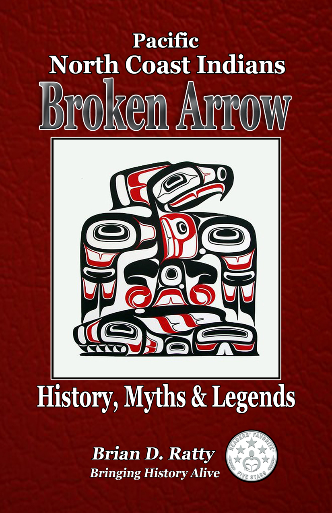

Book Details
Soft Cover Price $15.00
Kindle Edition $3.99
Broken Arrow History, Myths & Legends
Brian D. Ratty
Soft Cover Price $15.00
Kindle Edition $3.99
Brian D. Ratty
Where did the Pacific North Coast Indians come from and where did they go? This is the question that many people ask when they hear the fascinating stories of the North Coast’s history. Broken Arrow, the book, is both a narrative and a vivid glance back to the heroic times of long ago when many Indian tribes called the shores of the lower Columbia River their home.
Listen for the splash of beaver tails and the high-pitched calls of the sea otters. How did these two animals, of apparently little consequence, help change the course of Oregon’s history forever? How did their luxurious pelts make some men rich and others poor, while erasing thousands of years of Indian culture from the Pacific North Coast?
Author Brian Ratty crafts a rewarding tale of dueling conflicts: the value of the profitable pelts versus the society and culture of the coastal Indians. This is a story worth telling, in the many voices of the different people who lived during those turbulent times.
Broken Arrow is not a textbook about the Indians. Instead, it offers up nuggets of their history, providing fascinating glimpses of how they lived and survived in the wilderness, long before the coming of the white man.

Broken Arrow is an excellent account of lost indigenous people, their culture, and their place in history.”
Reviewed By K.C. Finn, for Readers’ Favorite Five Stars
This book is well documented and told with clarity and precision of detail.” Readers Favorite Review Five Stars